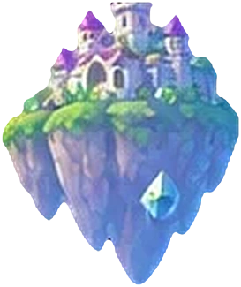
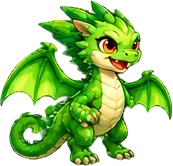
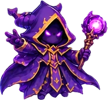
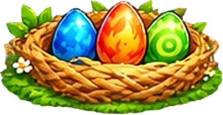

Naga Penjaga
Naga Penjaga
Isi kotak di panel dengan peluru dan bola yang dibidik. 3 stage, 1 penyihir jahat!




Naga PenjagaIsi kotak di panel dengan peluru dan bola yang dibidik. 3 stage, 1 penyihir jahat!
ke posisi tegak
Permainan berhenti. Skor, telur, dan perisaimu aman. Di komputer: ubah ukuran jendela kembali.
Game ini dimainkan dengan HP berdiri. Permainan lanjut otomatis.
Permainan berhenti sebentar.